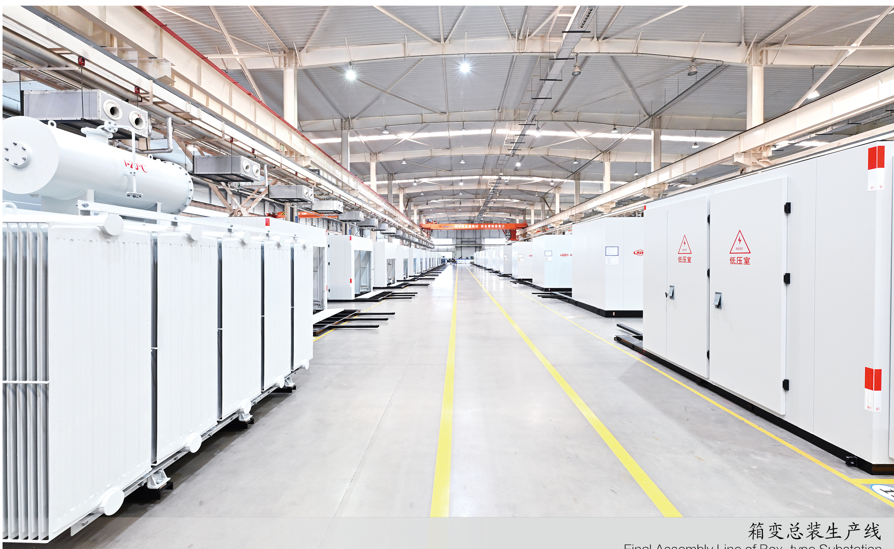

Manufacturing
Manufacturing and testing capability
A structured view of production, verification and quality-control stages.
From production scale to 220 kV-class testing.
Series capability is presented separately from model-specific third-party test evidence, and is not presented as blanket certification.
- Site area
- 317 muSeries capability
- Plant area
- 100,000 m²Series capability
- Large mechanical equipment
- 460Units / sets
- Supporting test equipment
- 60 typesSeries capability
- Large main transformers
- 1,200Units per year
- Distribution transformers
- 12,000Units per year
- Box-type substations
- 10,000Units per year
- Complete switchgear
- 15,000Units / sets per year
Plant division: large transformer plant, intelligent switch plant, distribution transformer plant and welding plant.
From winding to final tests.
Project-specific production allocation and final test scope remain subject to engineering confirmation.
Coil winding
Controlled winding of high- and low-voltage coils for the selected conductor and insulation system.
Core processing
Magnetic-core cutting, stacking and assembly for loss and noise control.
Vacuum drying
Insulation drying before liquid filling and final assembly.
Assembly and tank fabrication
Active part, enclosure, switchgear and auxiliary-system integration in dedicated transformer and welding plants.
Impulse testing
Verification of insulation performance for the applicable product and project scope.
Loss measurement
No-load and load-loss measurement against the agreed technical schedule.
Test and inspection program
Routine and type tests for the applicable scope, including temperature-rise verification when required.
Production equipment
- 20 t horizontal winding machineLarge-coil winding for power transformer production.
- Full-servo HV horizontal winding machineServo-controlled high-voltage winding line.
- Foil coil winding machineFoil winding for low-voltage and distribution-transformer coils.
- Soenen cut-to-length lineCore cutting line imported from Belgium for magnetic-core processing.
- Welding robotAutomated tank welding for repeatable fabrication.
- Vacuum casting tankAutomatic vacuum casting for cast-resin dry-type transformers.
Systems and laboratory
- MES
- Dynamic production planning, real-time monitoring and bottleneck identification
- QMS
- Full-process quality traceability and issue location
- WMS
- Warehouse management to reduce inventory and material shortages
- SRM
- Supplier collaboration and material-delivery coordination
- Lightning impulse
- 2,400 kV test system
- Power-frequency withstand
- 300 kV test system
- Partial discharge
- 8-channel detector
- Power analysis
- WT3000 power analyser
- Test power supply
- Independent generator set
- Laboratory scope
- Routine and type testing for transformers of 220 kV and below
Review the plant behind your order.
Request a factory visit or the inspection and test plan for your project.